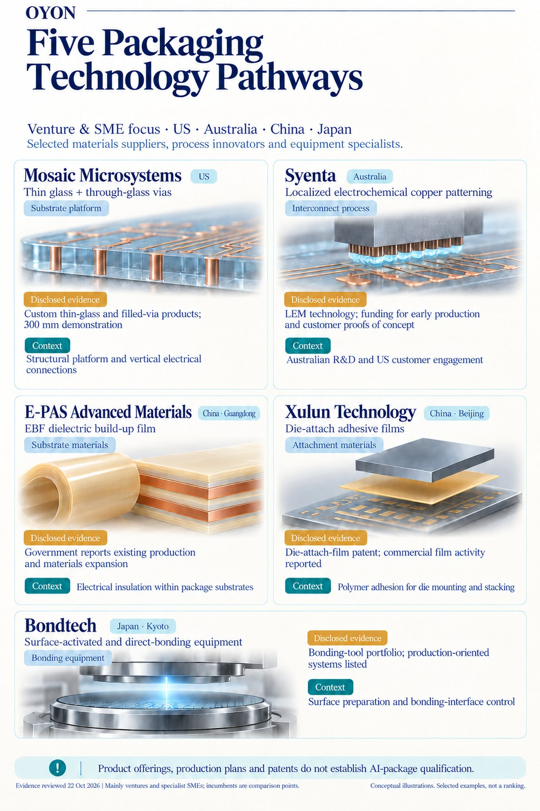

Back to Research & Perspectives
Chiplet Packaging: Venture and SME Pathways Across Regions
Chiplets create opportunities beyond chip design. Bringing multiple dies into a reliable package also depends on substrates, electrical connections, polymer films and bonding processes.
This selection focuses mainly on ventures and specialist SMEs, spanning the US, Australia, China and Japan. Established global suppliers provide the incumbent benchmarks; the featured companies illustrate emerging technologies and specialist capabilities worth examining more closely.
Where these technologies fit in the packaging stack
A package must support dies mechanically, connect them electrically, insulate wiring layers and maintain reliable interfaces.
Thin glass provides a substrate platform. Copper patterning creates interconnects. Dielectric build-up films insulate conductor layers, while die-attach films secure dies. Bonding equipment addresses another critical interface: how surfaces are prepared, aligned and joined.
These technologies occupy different positions in the stack. Their relevance depends on the package architecture, and the companies shown are separate examples rather than suppliers to one shared commercial product.
A company view across four regions


US — thin-glass packaging platforms. Rochester-based Mosaic Microsystems combines glass handling, through-glass vias and metallization. Its approach illustrates the engineering required to turn thin glass into a functional packaging platform. [1] [2]
Australia — interconnect-manufacturing innovation. Sydney-headquartered Syenta develops Localized Electrochemical Manufacturing, connecting Australian technology development with international customer engagement. It represents a process opportunity alongside the materials suppliers. [3]
China — differentiated polymer materials. Guangdong-based E-PAS and Beijing-based Xulun illustrate distinct opportunities in substrate dielectric films and adhesive films. Sharing a polymer foundation does not make their products interchangeable: they solve different integration problems. [4] [5]
Japan — specialist bonding equipment. Kyoto-based Bondtech develops surface-activation and wafer/chip-bonding systems. It adds an equipment SME perspective: material integration also depends on controlling surface condition, alignment and the bonding interface. [7] [8]
Five companies, five evidence profiles
| Company | Region | Technology and packaging role | Disclosed evidence |
|---|---|---|---|
| Mosaic Microsystems | US | Thin glass and through-glass vias: substrate platform and vertical connections | Custom thin-glass and filled-via products; a 300 mm demonstration reported. [2] |
| Syenta | Australia | Electrochemical copper patterning: fine interconnect formation | Manufacturing technology and funding allocated to early production and customer proof-of-concept programs. [3] |
| E-PAS Advanced Materials | China · Guangdong | EBF dielectric build-up films: insulation within package substrates | Government reporting describes existing manufacturing and expansion involving substrate materials. [4] |
| Xulun Technology | China · Beijing | Die-attach adhesive films: die mounting and stacking | A die-attach-film patent and reported commercial activity across semiconductor films. [5] [6] |
| Bondtech | Japan · Kyoto | Surface-activated and direct bonding: interface preparation and joining | A bonding-tool portfolio listing development and production-oriented systems. [8] |
What matters for commercialization
The disclosed evidence differs by company and application. A product offering, production investment, patent or equipment catalogue supports a different conclusion. None alone establishes qualified supply for a particular AI package.
Bondtech also highlights an important distinction within the landscape. Adhesive films attach dies through polymer adhesion; suitable direct-bonding processes can join prepared surfaces without an adhesive. These are architecture-dependent approaches, with different material and process requirements. [9]
For ventures and specialist SMEs, the commercial opportunity is therefore more specific than participation in a growing packaging market. It lies in solving a defined integration problem—and finding the customer, manufacturing partner and qualification route that can turn that solution into recurring business.
Selected public sources
- Mosaic Microsystems — company and Rochester location
- Mosaic Microsystems — thin-glass and filled-via products
- NRFC — Syenta technology, investment and commercialization plans
- Heshan government — E-PAS substrate-material manufacturing and expansion
- 36Kr — Xulun company and commercial-film reporting
- Xulun — die-attach-film patent CN119331550B
- Bondtech — company and technology background
- Bondtech — bonding equipment portfolio
- Bondtech — surface-activated bonding technology